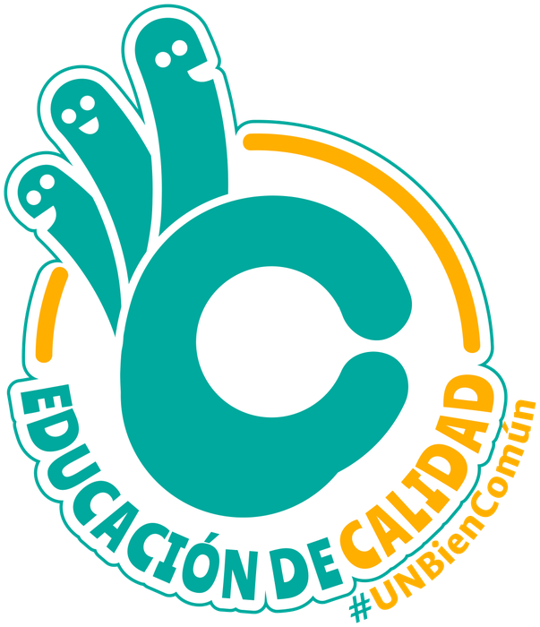

Tu experiencia tiene mucho que aportar
La calidad se construye contigo
¿Qué hace mejor tu experiencia en la UNAL? El Sistema Interno de Aseguramiento de la Calidad (SIAC) busca conectar lo que aprendemos, evaluamos y decidimos para mejorar juntos. Explora la propuesta y aporta tu mirada.
¿Qué conecta el SIAC?
El SIAC busca conectar la evaluación, la participación, la información y la planeación de la Universidad. ¿Para qué? Para que reconocer una dificultad sea el primer paso hacia una mejora, con responsables y seguimiento.
Vida Universitaria
Promover una experiencia universitaria digna, incluyente y con sentido de pertenencia para quienes estudian, enseñan, trabajan y egresan.
Funciones Misionales
Conectar la formación, la investigación y la extensión para responder a los retos de la sociedad.
Gobernanza Universitaria y Gestión Institucional
Convertir los resultados de la evaluación y la planeación en decisiones oportunas y fundamentadas.
Evaluación Institucional de la Calidad
Reconocer avances y oportunidades de mejora a partir de las evaluaciones que realiza la Universidad.
Participación y Diálogo Institucional
Escuchar experiencias diversas, analizar los aportes y comunicar cómo se tienen en cuenta.
Gestión del Conocimiento y la Información
Transformar datos confiables y conocimiento compartido en mejores decisiones.
Gestión del Cambio y Planeación Estratégica
Dar a cada mejora un rumbo, responsables y seguimiento para avanzar hacia resultados.
Apreciar
Reconocer lo que ya funciona.
Comprender
Entender las causas y escuchar distintas perspectivas.
Trazar
Decidir qué mejorar y por dónde empezar.
Unir
Conectar a las personas y los equipos que harán posible la mejora.
Aprender
Revisar los resultados y aprovechar lo aprendido para seguir mejorando.
Una propuesta para conocer, conversar y enriquecer
La propuesta reúne diagnósticos, métodos y herramientas para fortalecer la calidad en la UNAL. Conoce qué desarrolla cada componente y encuentra los temas en los que tu experiencia puede aportar.
Evaluación Institucional de la Calidad
Explora cómo se evalúa la Universidad, cómo mejorar esas evaluaciones y cómo el ciclo ACTÚA orienta el aprendizaje institucional.
Participación y Diálogo
Conoce los espacios de participación existentes y las orientaciones para fortalecer el diálogo y el seguimiento a los aportes.
Gestión del Conocimiento y la Información
Descubre cómo aprovechar mejor la información institucional: un diagnóstico de capacidades, un índice para valorarlas y el diseño de SISAICA.
Gestión del Cambio y Mejoramiento Continuo
Conoce cómo se gestionan las mejoras y qué se propone para priorizarlas, organizarlas y acompañar su desarrollo.
Modelo Institucional de la Calidad
Propone criterios para reconocer, analizar y valorar la calidad desde la identidad y los propósitos de la UNAL.
Informe técnico de la propuesta
Reúne los fundamentos, diagnósticos y desarrollos de la propuesta. Un punto de partida para profundizar en el SIAC.
Proyecto de Acuerdo
Presenta la propuesta normativa para formalizar el SIAC. Los aportes de esta fase contribuyen a su revisión antes de someterla a las instancias competentes.